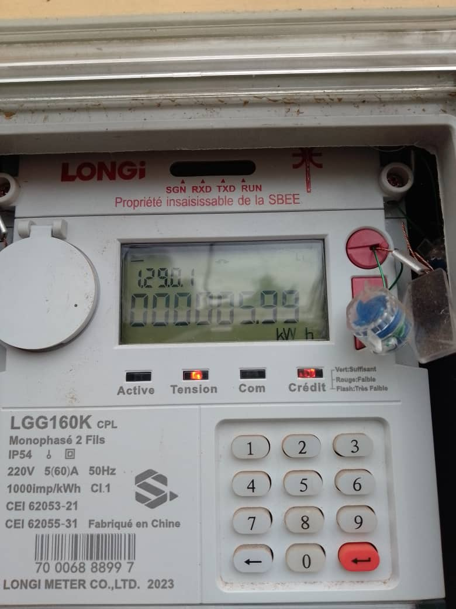
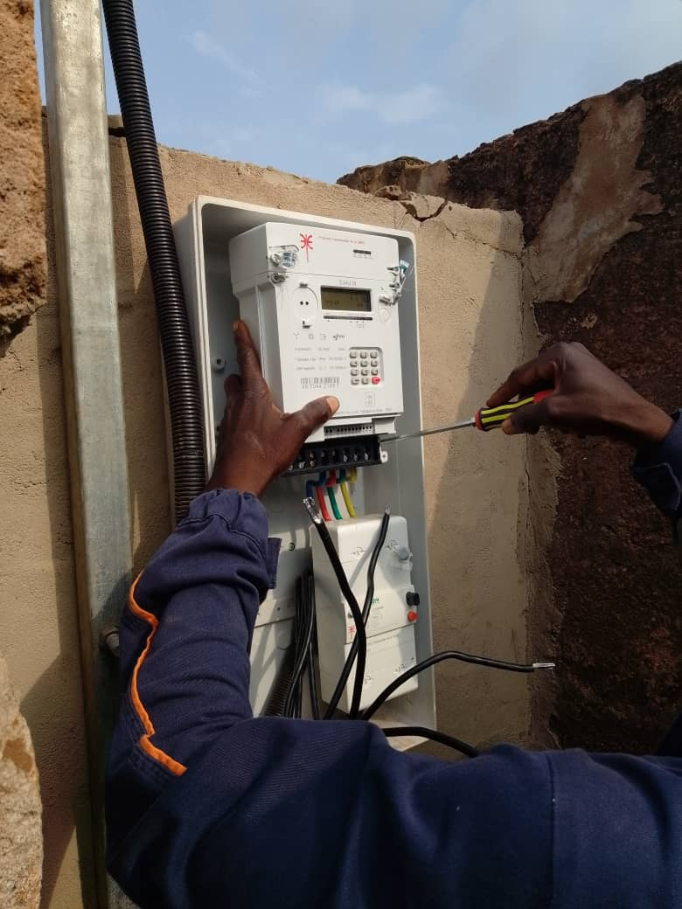
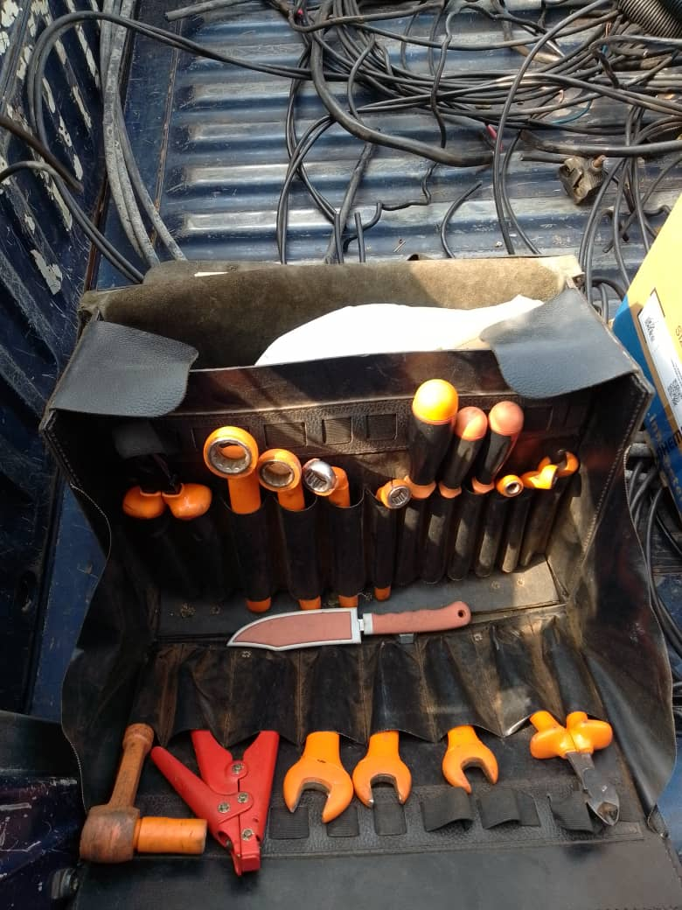

Projet
Installation électrique domestique
Conception et réalisation des installations électriques domestiques.
Contexte
- Rôle
- Garantir une installation électrique fonctionnelle, durable et sécurisée, tout en assurant le confort des occupants et la protection des équipements électriques.
- Période
- Période de réalisation :
- Stage 1 : Août – Septembre 2023 chez un électricien résidentiel, Porto-Novo, Ouémé, Bénin
- Stage 2 : Juillet – Août 2024 chez un électricien résidentiel, Porto-Novo, Ouémé, Bénin
- Stage 3 : Septembre – Octobre 2025 chez un électricien résidentiel, Porto-Novo, Ouémé, Bénin
- Stage 4 : Décembre 2025 – Janvier 2026 à la SBEE, Porto-Novo, Ouémé, Bénin
- Stage 5 : 03 Août 2026 – 04 Septembre 2026 à la SBEE, Porto-Novo, Ouémé, Bénin
Technologies
- Câblage électrique
- Tableau électrique et dispositifs de protection
- Appareillage électrique
Objectifs
- Sécurité électrique : Assurer la protection des personnes et des équipements contre les risques électriques.
- Installation fonctionnelle : Réaliser des circuits électriques fiables pour alimenter les prises, interrupteurs et points lumineux.
- Conformité et durabilité : Respecter les normes de sécurité électrique et garantir le bon fonctionnement des installations sur le long terme.
Résultat
Réalisation d’installations électriques domestiques fonctionnelles et sécurisées, avec mise en place des dispositifs de protection, vérification des circuits et acquisition de compétences pratiques en câblage, raccordement et dépannage électrique de base.
Photos et preuves
-

Compteur électrique monophasé -

Installation d'un compteur électrique triphasé -

Trousse à outils de terrain – Électricien / Technicien réseau